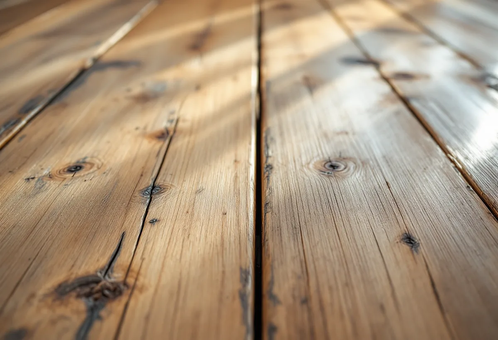
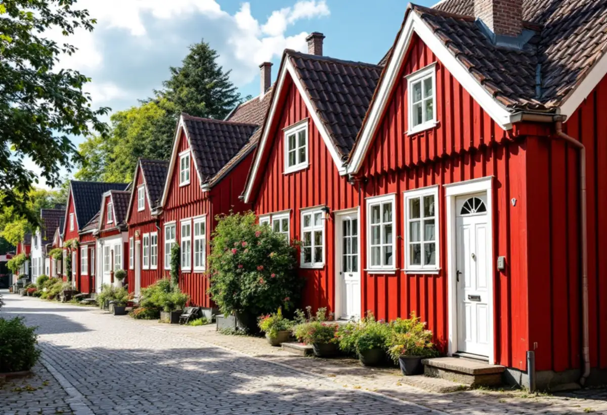

Platsbesök
Gratis besök där vi tittar på golv och detaljplan.
I Sigtuna stad finns trähus som är nästan 300 år gamla, och i en del av dem ligger breda plankgolv av furu. Ett sådant golv slipas varsamt, så att inte mer trä än nödvändigt tas bort. Geal Entreprenad AB slipar och behandlar golv i Sigtuna stad, Märsta och kommunens övriga orter.
Sigtuna kommuns bevarande- och förnyelseplan för Sigtuna stad, antagen 2019, beskriver den småskaliga trähusbebyggelsen i den centrala staden och på Malmen som ett av stadens starkaste karaktärsdrag. Husen uppfördes före andra halvan av 1800-talet, i huvudsak i timmer med rödfärgad eller oljemålad panel och tegeltak. Kvartersindelningen har på sina håll en hävd på över tusen år, och trots åtskilliga stadsbränder har flera kvarter trähus som är upp mot nästan 300 år gamla.
I sådana hus kan golven vara lika gamla som stommen, eller ha lagts om flera gånger. Vi börjar därför med att ta reda på vad som ligger där: breda plank, smalare brädor eller ett senare golv ovanpå ett äldre. Det avgör hur hårt golvet kan slipas.

Planen berättar att det finns ungefär 60 gällande detaljplaner inom området. Kulturvärden kan skyddas med skydds- och varsamhetsbestämmelser. En skyddsbestämmelse, betecknad q, kan enligt planen omfatta både exteriör och interiör och gälla utformning, material, teknik och underhåll, och ibland föreskrivs vissa arbetstekniker.
Sigtuna kommun skriver att ursprungliga material och detaljer om möjligt ska bevaras eller ersättas med samma material om de behöver bytas ut. För ett skyddat golv betyder det att vi slipar så lite som möjligt och väljer en ytbehandling som passar huset. Är du osäker på om huset ligger i ett kulturhistoriskt särskilt värdefullt område kan kommunen bedöma det utifrån bilder på hur huset ser ut i dag.
Byggnadsvårdsföreningen svarar i en fråga om ett furugolv med runt 25 centimeter breda plank i ett sommarhus från omkring 1900, där springorna var upp till 5 millimeter. Föreningen påpekar att plankorna i regel har en kraftig not och spont som är djupare än springan, att golvet rör sig och att plankorna torkar ihop i ett torrt inomhusklimat. Springorna kan fyllas, men det blir sällan vackert; snyggast är enligt svaret om man kan plocka upp plankorna.
Vi slipar därför inte bort springorna, utan bedömer om golvet ska läggas om innan det slipas. Att ta upp plankorna, rengöra noten och lägga dem tätare igen är mer arbete än en slipning, men det gör att golvet behåller sitt material. Ska golvet ersättas helt finns golvläggare i Sigtuna.
Golvbranschens riktlinjer SLIP 22 säger att golvet inte ska ytbehandlas när den relativa fuktigheten inomhus ligger utanför 30–60 procent, eftersom variationerna kan ge sprickor i spacklade fogar. I ett äldre trähus som inte värms upp hela året kan fukten variera mycket, och då väntar vi med ytbehandlingen tills värdena är rätt.
Slutslipningen av furu görs med korn 100. Riktlinjerna varnar också för självantändning: slipdamm som blandats med lack eller olja är brandfarligt, och dammpåsen töms och förvaras utomhus. Mer om tjänsten finns under golvläggning och golvslipning.

Gratis besök där vi tittar på golv och detaljplan.
Slipa, lägga om eller laga plankorna.
Spikar bort, lösa plank fästs.
Så lite trä som möjligt tas bort.
Rätt luftfuktighet före behandling.
Såpa, olja eller lack efter husets behov.
Skatteverket räknar slipning av golv i ett småhus som rotarbete, och avdraget gäller även ett fritidshus som du äger och kan använda. I en bostadsrätt gäller avdraget arbete innanför lägenhetens väggar, tak och golv som du ansvarar för enligt stadgarna.
Avdraget är högst 30 procent av arbetskostnaden och högst 50 000 kronor per person och år. Material och resor ger inget avdrag, och Geal drar avdraget direkt på fakturan.
Golvytan, om plankorna måste läggas om eller fästas, springor och lagningar, hur mycket gammal färg eller fernissa som sitter på och vilken ytbehandling du väljer. Efter ett gratis platsbesök får du ett skriftligt kostnadsförslag.
Parkett, trägolv, klinker och slipning.
Golvläggning i Stockholm →Takbyte, takbesiktning och plåtarbeten.
Takläggare i Sigtuna →Sigtuna stad, Märsta och Arlanda.
Takrenovering i Sigtuna →Potten, Arlanda och gårdshusen.
Attefallshus i Sigtuna →Anmälan, fläkt och dusch i stället för badkar.
Badrumsrenovering i Sigtuna →Nytt hus, gästhus och större tomt.
Byggföretag i Sigtuna →Gatufasad, gårdsfasad och uthus i stadskärnan.
Fasadmålning i Sigtuna →Puts i stadskärnan, panel i dalgången.
Fasadrenovering i Sigtuna →Arlanda, ljudisolering och fönster i Sigtuna.
Fönsterbyte i Sigtuna →Bevarandeplanen, gammalt glas och fönsterkulörer.
Fönsterrenovering i Sigtuna →Golv på platta, fuktmätning och radon.
Golvläggare i Sigtuna →Ventilation, avlopp och anmälan.
Köksrenovering i Sigtuna →Stadskärnan, Märsta och Rosersberg.
Målare i Sigtuna →Plåttak, rännor och beslag i Sigtuna.
Plåtslagare i Sigtuna →Staket, dörrar och gårdshus i stad och dalgång.
Snickare i Sigtuna →Lov, checklista och gårdarnas tegel.
Takbyte i Sigtuna →Ny tapet i äldre trähus.
Tapetsering i Sigtuna →Arlanda, uterum och handlingarna.
Tillbyggnad i Sigtuna →Ventilation, VA och kulturmiljö.
Totalrenovering i Sigtuna →